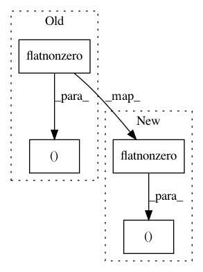

97bd5c775a17b4e3c2345765d26fd67678f7da2a,chainercv/transforms/bbox/crop_bbox.py,,crop_bbox,#Any#Any#Any#Any#Any#,4
Before Change
bbox = bbox[mask]
if return_param:
return bbox, {"index": np.flatnonzero(mask)}
else:
return bbox
After Change
truncated_mask = truncated_mask[mask]
if return_param:
index = np.flatnonzero(mask)
truncated_index = np.flatnonzero(truncated_mask)
return bbox, {
"index": index,
"truncated_index": truncated_index,
}
In pattern: SUPERPATTERN
Frequency: 3
Non-data size: 4
Instances
Project Name: chainer/chainercv
Commit Name: 97bd5c775a17b4e3c2345765d26fd67678f7da2a
Time: 2019-01-30
Author: ktns.87@gmail.com
File Name: chainercv/transforms/bbox/crop_bbox.py
Class Name:
Method Name: crop_bbox
Project Name: scikit-learn-contrib/imbalanced-learn
Commit Name: cddf39be59c3c1231d2d4fd3b9bfc10a21e63780
Time: 2017-08-24
Author: g.lemaitre58@gmail.com
File Name: imblearn/under_sampling/prototype_selection/tomek_links.py
Class Name: TomekLinks
Method Name: _sample
Project Name: theislab/scanpy
Commit Name: d2a42aaf1fb53a1e3beeaa90bb80767fccf80eaf
Time: 2017-04-24
Author: f.alex.wolf@gmx.de
File Name: scanpy/preprocess/simple.py
Class Name:
Method Name: smp_norm